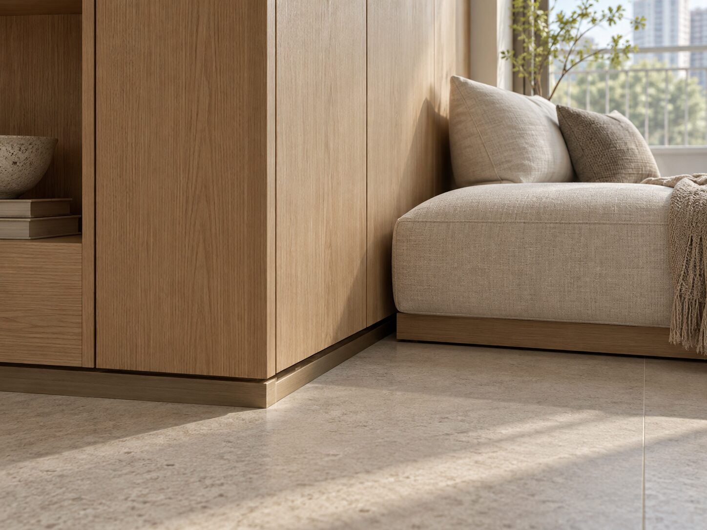

SERVICES
공간을 바라보는 네 가지 관점
풀하우스는 공간의 목적과 사용 환경에 따라 서로 다른 디자인 접근을 제안합니다. 아래에서 공간 유형별 서비스 범위와 관련 프로젝트를 확인해 보세요.

포트폴리오 제작 이미지
01 RESIDENTIAL
삶을 위한 공간
생활 방식에 맞춘 기능과 감성
- 서비스 범위
- 아파트·주택 리모델링
- 주거 공간 스타일링
- 이런 분께
- 입주를 앞둔 세대와 리모델링을 계획하는 가정

포트폴리오 제작 이미지
02 COMMERCIAL
브랜드를 위한 공간
비즈니스 목적과 고객 경험의 연결
- 서비스 범위
- 매장
- 사무실
- 의료·서비스 공간
- 이런 분께
- 매장·사무실·의료기관 등 공간을 운영하는 사업자

포트폴리오 제작 이미지
03 CULTURE
경험을 위한 공간
콘텐츠와 관람 경험의 공간화
- 서비스 범위
- 박물관
- 전시관·문화시설
- 전시 연출
- 이런 분께
- 전시·문화 공간을 기획하거나 운영하는 기관

포트폴리오 제작 이미지
04 LANDSCAPE
환경을 위한 공간
건축과 주변 환경의 조화
- 서비스 범위
- 외부 공간
- 보행 환경
- 조경 계획
- 업무 범위
- 건축물 외부 공간의 동선과 보행 환경, 식재·조경 계획을 건축과 주변 환경에 맞춰 함께 검토합니다.
- 이런 분께
- 건축물과 외부 공간을 함께 계획하려는 건축주·시설 운영자
어떤 공간이든, 쓰임부터 듣겠습니다.
공간 유형과 위치, 희망 일정을 알려 주시면 확인 후 연락드립니다.